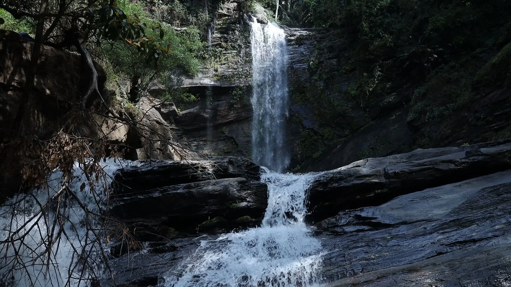
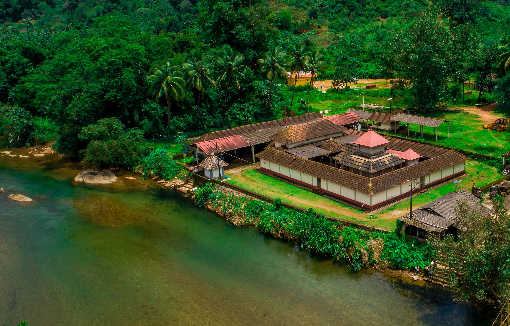
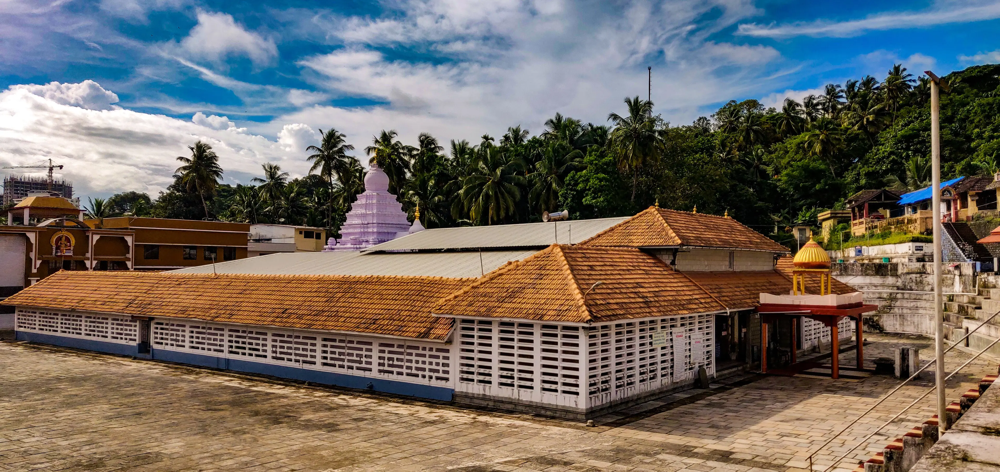

Didupe Falls cascades down a series of rocky cliffs, creating a mesmerizing spectacle of rushing water surrounded by lush greenery.

The temple located at Shishila village, approximately 90 km from the city of Mangaluru, stands on the banks of the River Kapila.

The 12th-century temple located at Kadri, earlier known as Kadali, for the land which cultivated Kadali plantain is an abode of Lord Shiva worshipped in, the form of Lord Manjunatha.